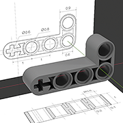
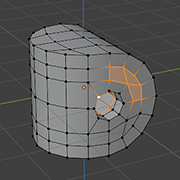

Интерфейс, управление раскладой панелей. Панель 3D-вида (Viewport): управление камерой, режимы отображения, вспомогательные элементы. Панель «Иерархия» (Outliner).
Добавление и дублирование примитивов. Параметры положения, ориентации и масштаба объектов: панель свойств (Properties), N-панель, манипуляторы, инструменты, быстрые клавиши. Углы Эйлера и кватернионы. 3D-курсор, перемещение полюсов объектов, фиксация трансформации.
Модификаторы «Зеркало» (Mirror), «Массив» (Array) и «Винт» (Screw), фиксация модификаторов.
Семинар 2
Boolean моделирование

Модификатор Boolean, комбинация с модификаторами Array и Mirror. Неразрущающее редактирование, порядок применения модификаторов. Аддон Bool Tool, комбинации клавиш для динамических и зафиксированных булевых операций.
Группирование объектов, параметры отображения на панели 3D-вида (Viewport Display), временное и постоянное скрытие элементов.
Вершинные нормали, затенение по Фонгу. Режимы «плоского» (Flat) и «гладкого» (Smooth) затенения, острые края, модификатор Auto Smooth. Артефакты затенения, связь с топологией сетки.
Режим редактирования

Режим редактирования в панели 3D-вида: подрежимы выделения полигональных элементов, трансформация групп элементов, перемещение вдоль рёбер, операции с 3D-курсором. Непланарные грани.
Выделение групп вершин, «рентгеновский просмотр» (X-Ray toggle). Добавление вершин: экструдирование (Extrude) и подразбиение (Subdivide). Удаление и слияние (Merge) вершин, слияние по расстоянию, автослияние при перемещении.
Добавление рёбер: соединение (Join) и заполнение (Fill) пар вершин, вставка петель рёбер (Edge loops), инструмент «Нож» (Knife). Удаление и растворение (Dissolve) рёбер, ограниченное растворение. Выделение кратчайших путей.
Добавление граней: заполнение по паре рёбер, заполнение по одному и трём рёбрам, мост между петлями рёбер (Bridge Edge Loops), заполнение сеткой (Grid Fill). Опции удаления граней.
*Режимы прилипания (Snapping) при трансформации, симметричное и пропорциональное редактирование.
Семинар 4
SubD моделирование
Операции «Экструзия» (Extrude) и «Вставка» (Inset) над индивидуальными гранями и группами граней. «Скос» (Bevel) рёбер и вершин.
Модификатор «Подразбиение» (Subdivision): математические основы, алгоритм Катмулла — Кларка, связь с B-сплайнами, сравнение со сплайнами Безье́. Управление сглаживанием при подразбиениях: поддерживающие петли (support loops), параметр «Складка» (Crease) для рёбер и вершин.
*Модификатор Bevel и параметр рёбер Bevel Weight, использование для добавления поддерживающих рёбер. Аддон Loop Tools.
Примеры
Семинар 5*
Материалы и рендеринг
PBR materials: physical foundations, principal BSDF, basic parameters, Shader Nodes. Lighting and camera settings, HDRI environment maps. Eevee and Cycles rendering engines, GPU setup.
PBR materials: physical foundations, basic parameters, Shader Nodes. Lighting and camera settings, HDRI environment maps. Eevee and Cycles rendering engines, GPU setup.